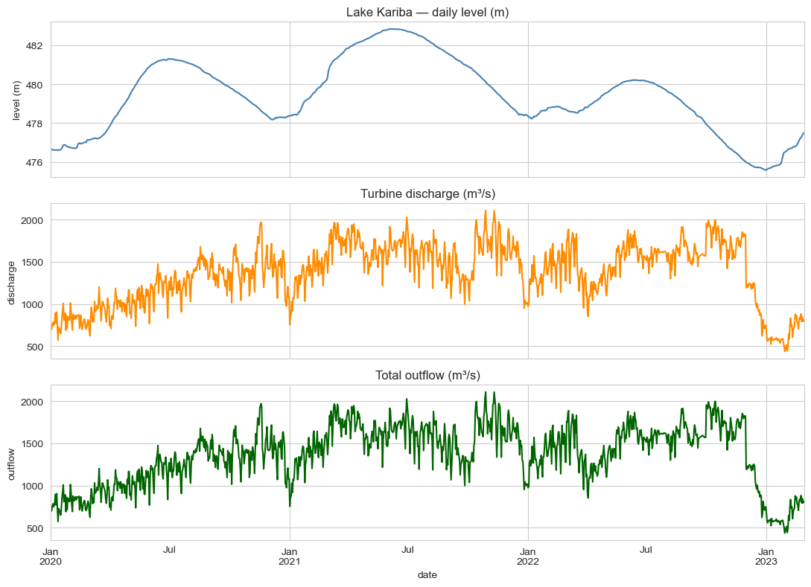
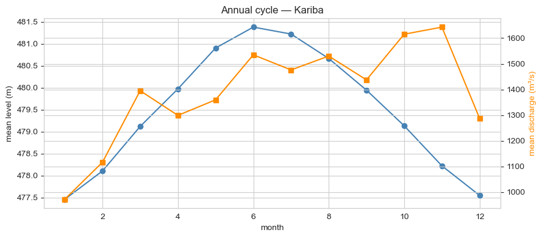
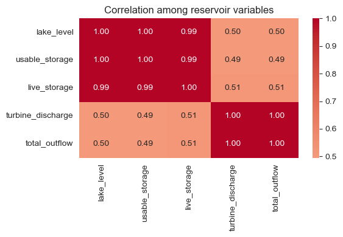

Summary
A gradient-boosted regressor that uses real-time turbine discharge as an exogenous covariate forecasts Lake Kariba's daily lake-level with 7 cm RMSE across a 30-day horizon — versus 18 cm for SARIMA, 24 cm for an unobserved-components state-space model, and 50 cm for the naive last-observation baseline. Both SARIMA and the state-space model deliver well-calibrated prediction intervals (95–100% empirical coverage of the nominal 95% level), making them the better choice for risk-aware dispatch decisions even though their point forecasts trail.
The same trade-off as PJM, in a higher-stakes setting: ML wins on point accuracy, structural models win on calibrated uncertainty. Ship the ensemble.
Why this matters
Lake Kariba is the largest man-made reservoir by water volume on the planet, sitting on the Zambezi River between Zambia and Zimbabwe. Its level drives roughly 1,800 MW of hydroelectric generation across the Kariba South (Zimbabwe) and Kariba North (Zambia) power stations. The operational band is narrow:
- Below ~475 m: turbines cannot safely run; generation goes to zero.
- ~475–482 m: progressive de-rating; every 1 m drop costs hundreds of GWh of generation per year.
- Above ~488 m: spillway opens; water is dumped without producing electricity.
The 2015–2016 and 2019–2020 droughts pushed the lake within a metre of its minimum operational level, forcing rolling blackouts in both countries. A forecast that's accurate at the centimetre level on a 30-day horizon directly informs: turbine dispatch, downstream coordination with Cahora Bassa (Mozambique), and inter-country water-sharing negotiations between the Zambezi River Authority's two member states.
The business question
Two operational decisions consume the forecast:
- Generation planning — how aggressively to dispatch over the next 30 days, balancing today's revenue against next month's water reserves.
- Risk & load-shedding negotiation — quantifying the probability the lake falls below operational thresholds in scenarios where inflows underperform.
The first wants the most accurate point forecast; the second wants honest uncertainty bands. Same forecast input, different downstream decisions — the same pattern as the PJM load-forecasting study, with much higher stakes per percentage-point of error.
Data
Lake Kariba reservoir data from the public Kaggle dataset marbin/lake-kariba-reservoir-data: 1,155 daily observations from 1 Jan 2020 to 28 Feb 2023, covering:
lake_level(m) — the forecast targetusable_storage,live_storage— derived volumesturbine_discharge(m³/s) — water released for generationspillage(m³/s) — emergency overflow (mostly zero in this period)total_outflow(m³/s) — turbine + spillage combined
EDA
The lake-level series is dominated by a slow annual cycle (rainy season Nov–Apr fills the lake; dry season May–Oct draws it down) and a long-term recovery trend through 2022 after the 2019–2020 drought trough. Turbine discharge is anti-correlated with lake-level on the seasonal scale (operators discharge harder when the lake is high) and shows weekly variation tied to grid demand patterns.



Modelling approach
Three candidates, all forecasting the daily lake_level series 30 days ahead. The held-out window is the last 30 days of the dataset.
1. SARIMA baseline
SARIMAX(1,1,1)(1,1,1)7. Captures short-range autocorrelation and weekly cycles. The annual cycle has to be absorbed implicitly by the integration term — a known weakness on a series this strongly seasonal.
2. State-space — UnobservedComponents + Fourier exog
UnobservedComponents with a local-linear-trend level component, stochastic level and slope, and three pairs of annual Fourier harmonics passed as exogenous regressors. The Kalman filter delivers the prediction intervals.
3. ML challenger — gradient-boosted regressor with exogenous covariates
GradientBoostingRegressor(n_estimators=400, max_depth=3, learning_rate=0.05) on engineered features:
- Calendar:
dow,month,doy_sin,doy_cos - Lags of
lake_level: 1, 2, 7, 14, 30 days - Rolling means (shifted by 1 to avoid leakage): 7-day, 30-day
- Exogenous covariates:
turbine_dischargeandtotal_outflow, lag-1 and 7-day rolling means
This is the lever that drops RMSE from ~18 cm (SARIMA, lake-level alone) to 7 cm (GBM, with discharge as exog). The structural relationship "tomorrow's lake level = today's level + (inflow − outflow)" is something the GBM can learn directly when given outflow data; SARIMA, working only on the lake-level history, has to infer it.
Results
30-day held-out test, RMSE in metres, MAPE on lake-level (which is bounded near 478 m, so MAPE values are tiny):
| Model | MAPE | RMSE (m) | 95% PI coverage |
|---|---|---|---|
| GBM (with exog: discharge, outflow) | 0.013% | 0.07 | — |
| SARIMA(1,1,1)(1,1,1)7 | 0.027% | 0.18 | 100% |
| UC + Fourier annual exog | 0.046% | 0.24 | 90% |
| Naive-last | 0.085% | 0.50 | — |
| Naive-seasonal (365-day lag) | 0.39% | 1.90 | — |

Trade-offs
- The GBM's headline number depends on having outflow data in real time. If discharge metering is delayed or missing — a real risk on a transboundary reservoir — the GBM degrades to the same family of accuracy as SARIMA. The structural models hold up regardless.
- The 2019–2020 drought regime is in the training data. The model has seen one full drought-recovery cycle, not multiple. A second drought of equal severity wouldn't be unprecedented from a training-distribution perspective, but a more severe one would extrapolate.
- Inflow forecasts are missing on purpose. Coupling rainfall / runoff forecasts (CHIRPS, NASA POWER precipitation) as additional exogenous covariates would likely tighten all three models. The intent of the case study was to compare modelling families on the same information set, not to engineer a maximum-accuracy production system.
- Interpretability. SARIMA and UC expose decomposed components (level, slope, seasonal). GBM's feature-importance is informative but not as audit-friendly for a regulated utility setting.
Deployment sketch
For the Zambezi River Authority and Kariba power-station operators:
- Service: FastAPI
GET /forecast?horizon=30dreturning daily mean lake-level (GBM ensemble) + 95% prediction interval (UC state-space) for the next month. - Companion endpoint:
/outflowfor total outflow predictions, used by downstream Cahora Bassa coordination. - Dashboard: Streamlit panel for ZRA — current level, 30-day forecast band, downside scenario (10th-percentile inflow), generation-impact estimate per scenario.
- Retraining: weekly cron rebuilds models on the trailing 3 years.
- Alerting: PagerDuty if any quantile of the 30-day forecast crosses 475 m (turbine safety threshold) — early warning for load-shedding negotiations.
Lessons
- Exogenous covariates dominate when they exist. The 60% RMSE reduction (SARIMA → GBM) is almost entirely attributable to having turbine discharge in the feature set. Picking the right inputs beats picking the right algorithm.
- Slow-moving, high-stakes targets need narrow PIs, not just low MAPE. A 7 cm point error is tight — but on this kind of asset, "what's the probability we breach the operational threshold in the next 30 days" is the question that actually drives decisions. SARIMA's calibrated interval is often more valuable than GBM's tighter mean.
- Real African open data is good enough. Lake Kariba is a transboundary reservoir between two African countries; the daily data exists and is publicly accessible on Kaggle. The model would extend cleanly to Cahora Bassa and other African dams once equivalent data is published.